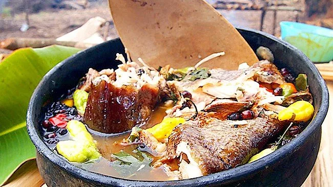

Lugares turisticos
Comida tipica
- AJICERO
- Pescado Moqueado
- Pescado Frito
el ajicero es un plato típico de Guainía y de la región Amazónica en general. Su origen proviene de las comunidades indígenas, quienes lo preparan con pescado, ají amazónico, yuca y hierbas locales. Es una sopa espesa y picante, muy representativa de la gastronomía del departamento.
El pescado moqueado es un plato tradicional de Guainía y la región Amazónica, de origen indígena. Consiste en pescado ahumado y secado al fuego lento sobre una estructura de palos, conocida como "moqueo". Este método permite conservar el pescado por más tiempo sin necesidad de refrigeración.
El pescado frito es un plato típico de Guainía y la región Amazónica, preparado con pescados de río como el bagre, dorado o pavón. Se sazona con sal y especias, luego se fríe en abundante aceite hasta quedar crujiente.

Sector economico
La economía de Guainía se basa en la extracción de recursos naturales, pesca, agricultura, comercio y turismo.
- Extracción de recursos: Minería de oro y coltán, aunque en su mayoría de forma informal.
- Pesca: Actividad fundamental, con especies como el bagre y el pavón.
- Agricultura: Cultivos de yuca, plátano, maíz y frutas amazónicas.
- Comercio: Leticia es un punto clave para el intercambio con Brasil y Venezuela.
- Turismo: Lugares naturales como el Cerro de Mavicure y ríos navegables.
Su economía es limitada por el difícil acceso y la falta de infraestructura, pero con alto potencial en ecoturismo y biodiversidad.